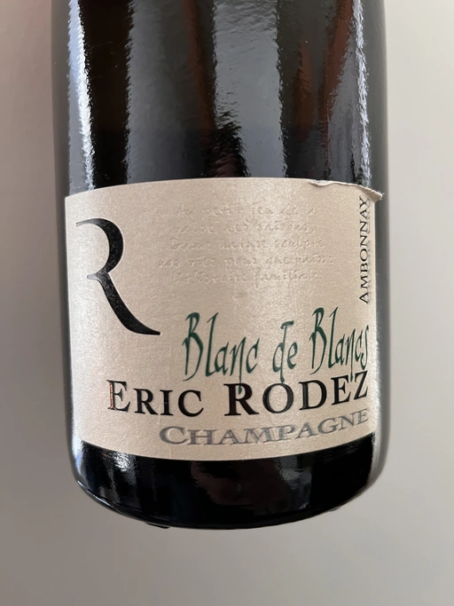

- Type
- White Sparkling, Brut
- Producer
- Eric Rodez
- Vintage
- NV
- Location
- France, Champagne AOC
- Grapes
- Chardonnay
- Alcohol
- 12.5
- Sugar
- 8
- Price
- 1852 UAH
- Cellar
- N/A
Ratings
2022-12-24 - 8.25
Slightly restrained at the beginning but becomes more intense and open after it warms a bit. A nice bouquet of honey, apple, brioche, and flowers with subtle hints of raw nuts and sea breeze. Piercing acidity. Almost full-bodied. Long and flavourful aftertaste: grapefruit, bruised apples, sea pebbles and Jerez. Good value.